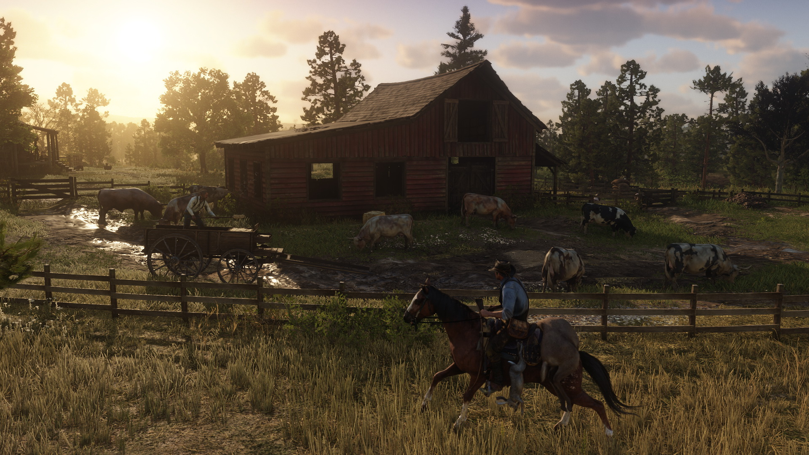
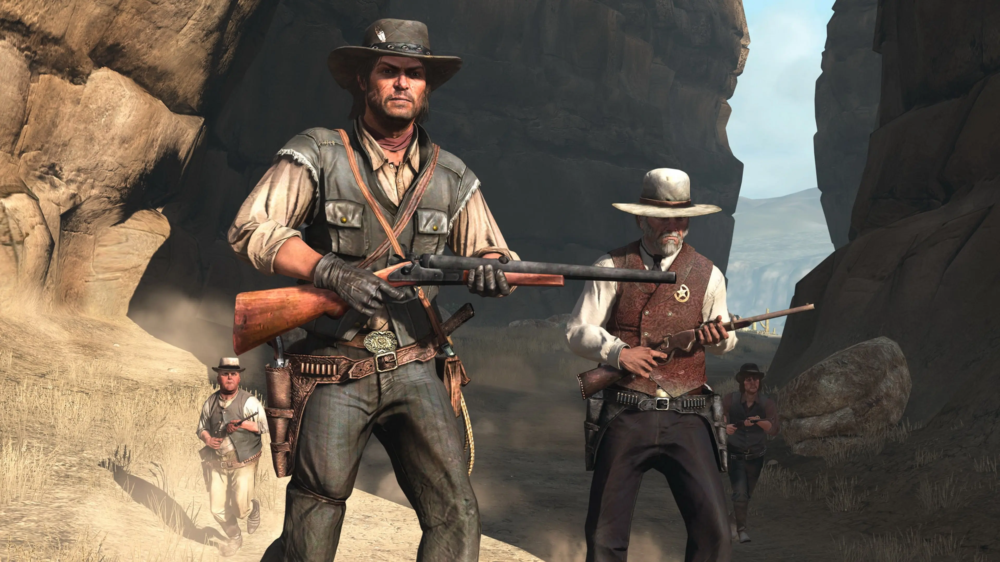
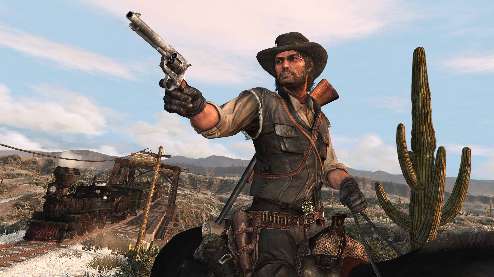

Red Dead Redemption
Platform: PC / Console · Genre: Action-adventure · Release: Original
Game Description
Red Dead Redemption is an open-world action-adventure game set in the final years of the American Old West. Explore a vast landscape, complete story missions, and engage in dynamic world encounters.
Screenshots



System Notes & Requirements
- OS: Windows 7/8/10 (64-bit) or console
- CPU: Dual-core 2.6 GHz or better
- RAM: 4 GB or more
- GPU: DirectX 9 compatible, 512 MB VRAM or more
- Disk: ~15 GB free space
How to Install (Windows)
Follow these Windows-specific steps to install from the ISO:
- Download the ISO file by clicking the Download / Install button below.
-
Mount and install:
- On Windows 8/10/11, right-click the ISO file and choose Mount.
- Open the virtual drive and run
setup.exeor the installer.
- Follow the on-screen prompts to complete installation.
- Once installed, launch the game from your desktop or Start menu shortcut.
- Enjoy playing Red Dead Redemption!
Download
ISO file size: 15 GB